Cross-Chain Transactions
Crosschain transactions are under this tab
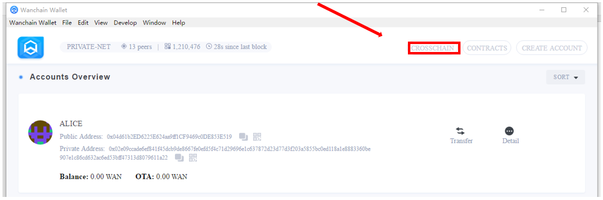
Before you make a crosschain transaction, please check WAN and ETH balance in your account in Wanwallet GUI or with links below.
Main network：
Test network：
Send ETH to Wanchain
Click the "ETH >> WETH" tab below to send ETH to Wanchain
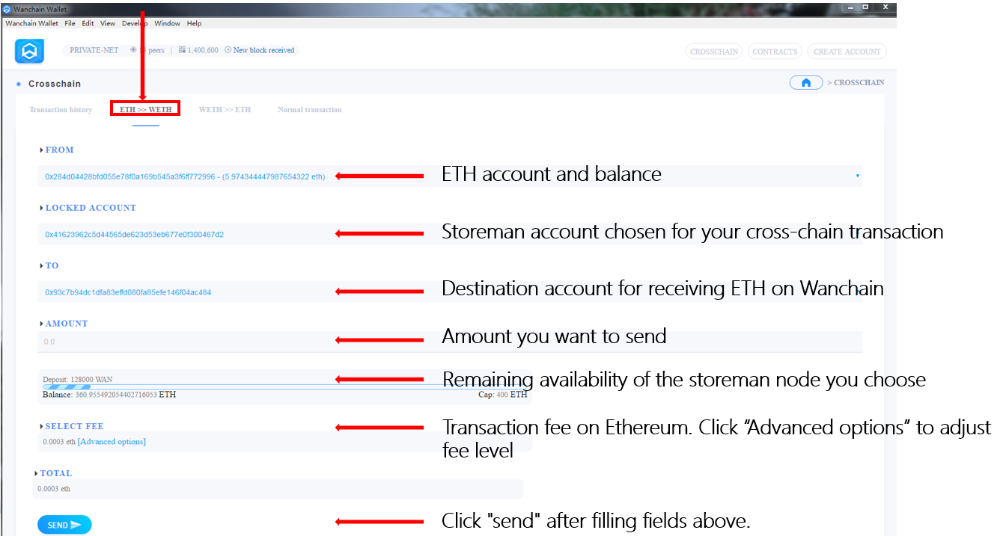
Enter your password then press “OK” button to send the transaction.
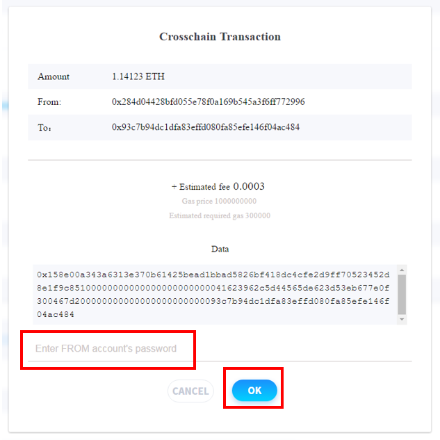
Confirm/Cancel the transaction
In the "Transaction history" tab, click on the “Confirm" button to finalize the cross-chain transaction process once it turns red.
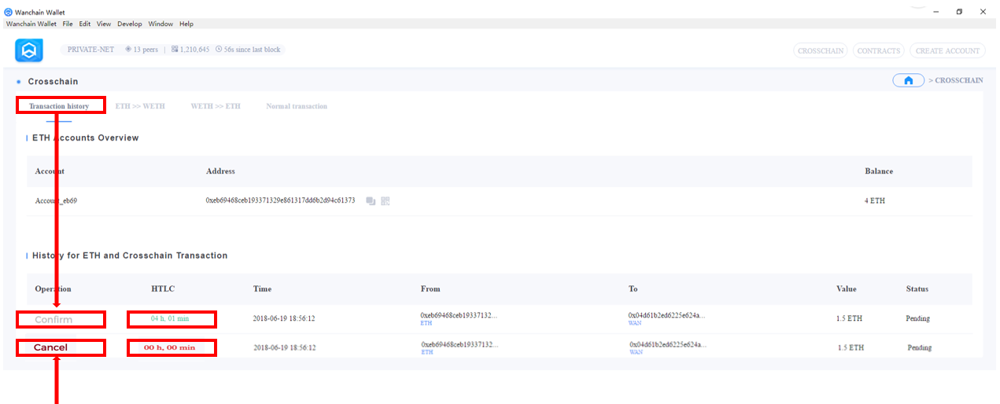
If you do not confirm before the HTLC countdown ends, it means you choose to cancel the transaction and refund the ETH from the locked account. The "Confirm" button changes to "Cancel" and you can click it to cancel the transaction once it turns red
Option A) Confirm transaction
Once the “Confirm” button turns red, click it to access “Confirm Transaction” page.
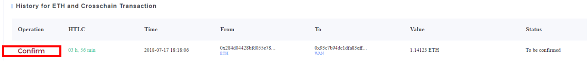
Enter the password then click “OK” button to finalize transaction
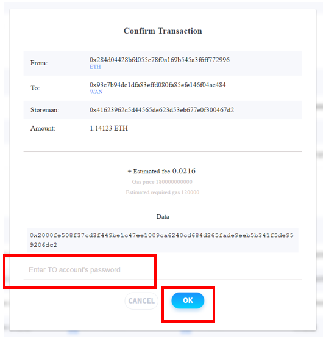
Option B) Cancel transaction
Once the “Cancel” button turned red (after countdown ends), click it to access “Cancel Transaction” page.
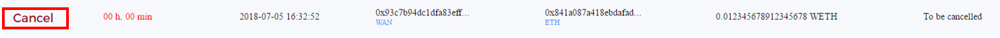
Enter the password then click “OK” button to cancel the transaction
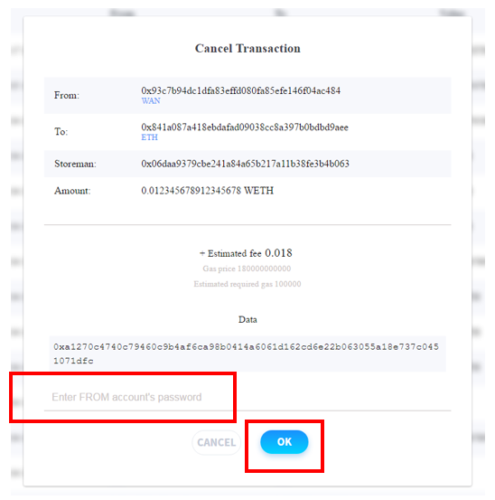
Send WETH to Ethereum
If you have ETH balance on Wanchain (WETH balance), you can send WETH back to Ethereum.
Click the "WETH >> ETH" tab below to perform this kind of cross-chain transaction.
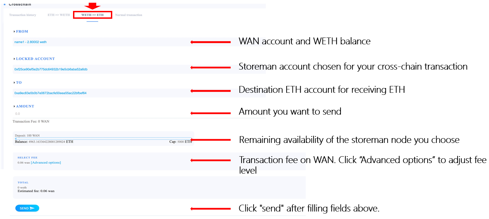
The process is similar to the ETH to Wanchain one, please refer to section 7 for details about how to confirm or cancel the transaction.
Normal Ethereum transactions
You can also perform normal Ethereum transaction in Wanwallet GUI.
Click the "Normal transaction" tab below, fill source and destination accounts, transaction amount, fee preference, then click "SEND"
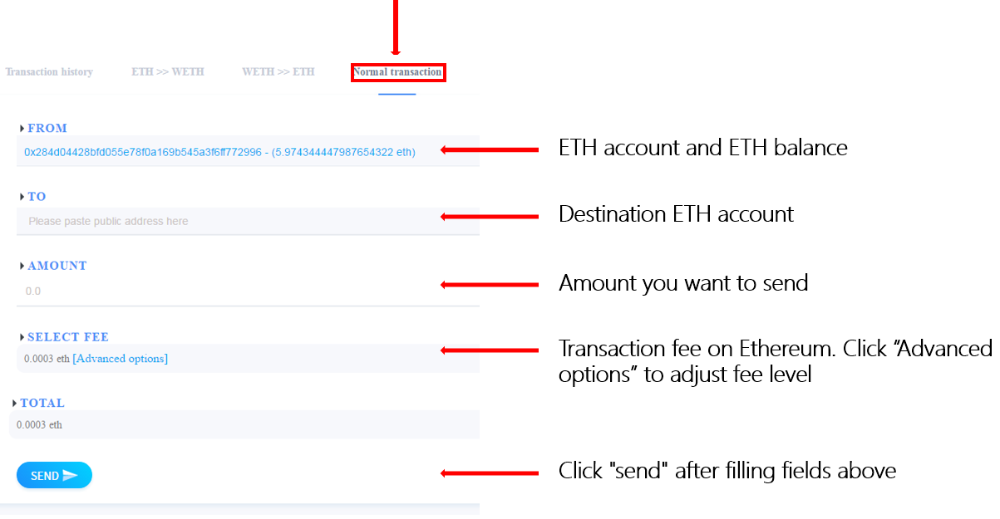
Private Transactions
NOTE: Public & Private Addresses
Transactions made using public addresses are, as the name suggests, publicly visible. Transactions made using your private address (do not confuse with private key) on the other hand, are not be publicly visible.
Public Address Example0xefe000C1b9f9ca9bf063857aAF5fCb7B8A25eaA1
Private Address Example:0x02bddd6c139a10c5c9e81d1d6438dd26bc4a26824a2c729819d21ee1fca8b2dbc203936c798596ac4adcbe89e96c88397894b6dfab14a95ea7e137c31f56b9c81255
Sending Private Transactions
Step 1: Click the Transfer button on the right to start a private transaction
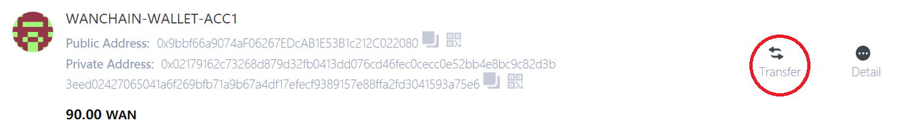
Step 2: Click Switch to Private in the From field and enter a Private address in the To field. The Recipient will need to share their Private address beforehand. Enter the amount of WAN to send and click SEND to start the private transaction.
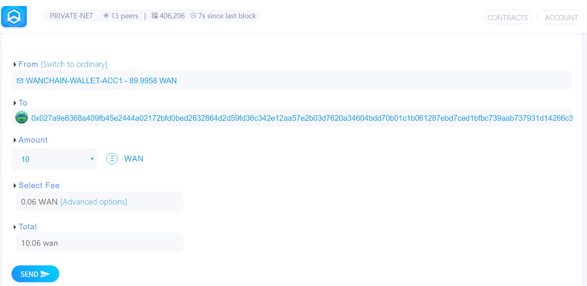
Step 3: Enter the Password for your account and click SEND TRANSACTION to send a private transaction.
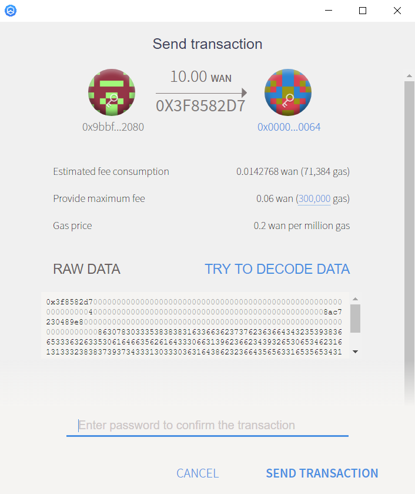
Step 4: The latest transaction is displayed at the top of the Transaction List.
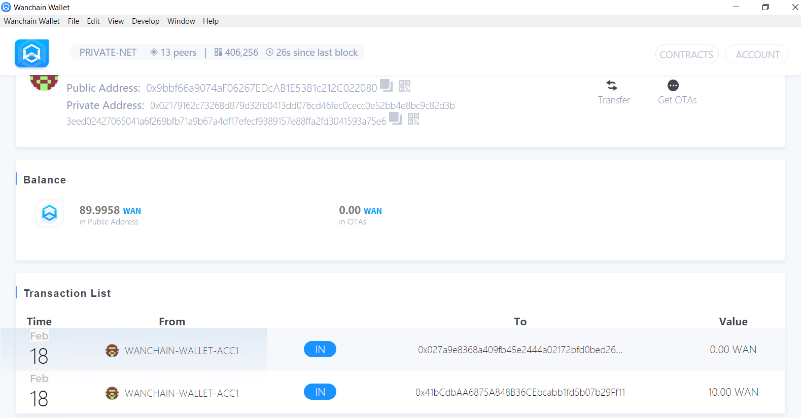
Step 5: On the Wanchain Explorer, the Value and the To address are masked and hidden from the public.
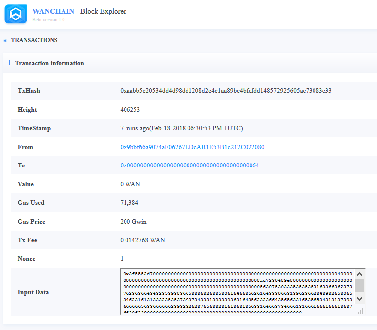
Receiving Private Transactions
Step 1: Click Details to view detailed account settings
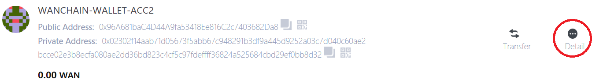
Step 2: Click Get OTA to begin the process to receive a private transaction.
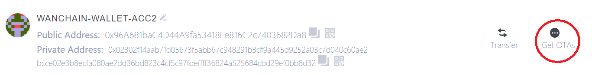
Step 3: Enter the Password for your Account and Click OK.
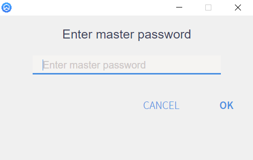
Step 4: Wait a few minutes for the transaction to be processed and click Redeem.
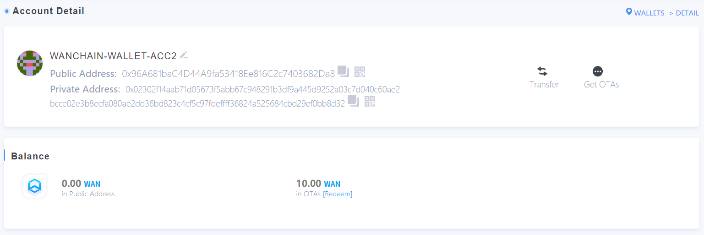
Step 5: Click Redeem to accept the transaction.
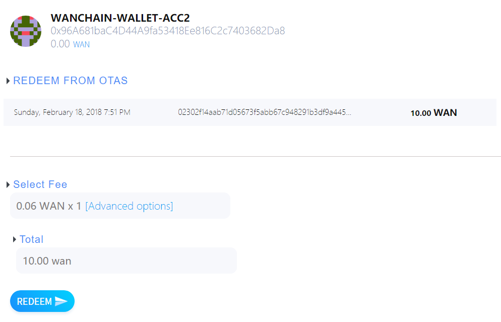
Step 6: The transaction details are show under Redeem from OTAs
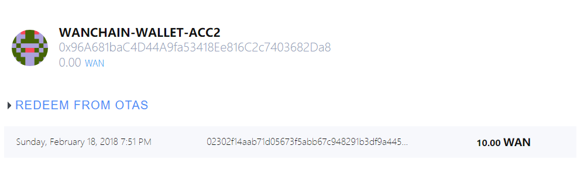